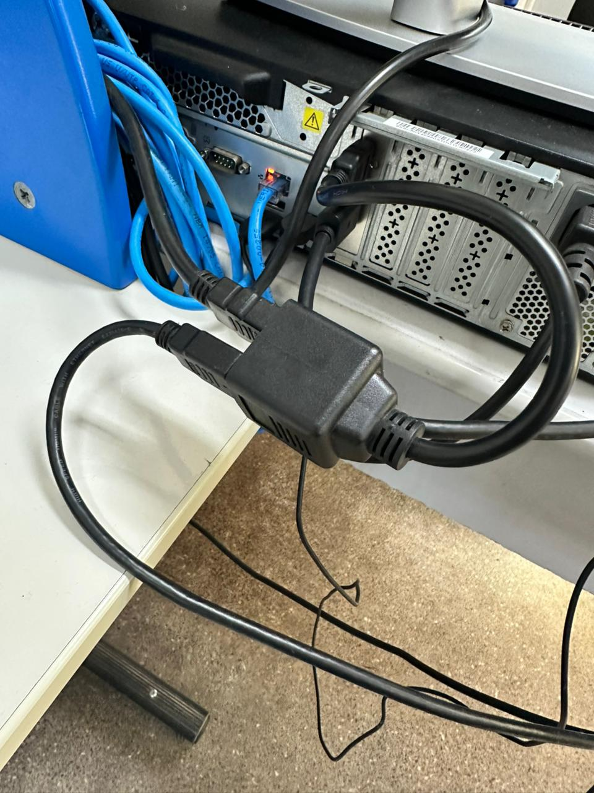

O som da TV está muito baixo
Página de solução — TV e som
Como resolver
- Identificar se a imagem aparece normalmente na TV, mas o som está muito baixo ou saindo pelo lugar errado.
- Verificar se o computador está usando o adaptador que permite conectar dois monitores e a TV ao mesmo tempo.
- Entender que, por causa desse adaptador, o Windows pode priorizar o áudio do monitor em vez do áudio da TV.
- Para resolver, retirar um dos cabos HDMI ligados ao adaptador.
- Fazer a ligação da TV diretamente no computador, sem passar pelo adaptador.
- Após conectar a TV diretamente ao computador, testar novamente o áudio.
- Considerar que, ao fazer isso, uma das telas poderá deixar de ser usada, mas o som da TV deverá funcionar corretamente.
Observações
- Esse ajuste troca a prioridade de áudio do Windows, fazendo a TV ser reconhecida corretamente como saída de som.
- A solução pode fazer com que uma das telas deixe de funcionar temporariamente, pois o computador deixará de usar uma das conexões HDMI do adaptador.
- Use essa solução quando a prioridade for apresentar com som na TV.
Ilustração do processo
Use as imagens abaixo como referência visual. Elas estão organizadas na ordem do procedimento.

O adaptador permite conectar mais telas ao computador, mas pode fazer o Windows priorizar o áudio do monitor em vez da TV.
Quando chamar suporte
Acionar suporte se, mesmo ligando a TV diretamente ao computador, o som continuar sem funcionar ou continuar muito baixo.
Dica: se o problema continuar, anote o equipamento, a sala, o horário e tire uma foto da mensagem exibida na tela.